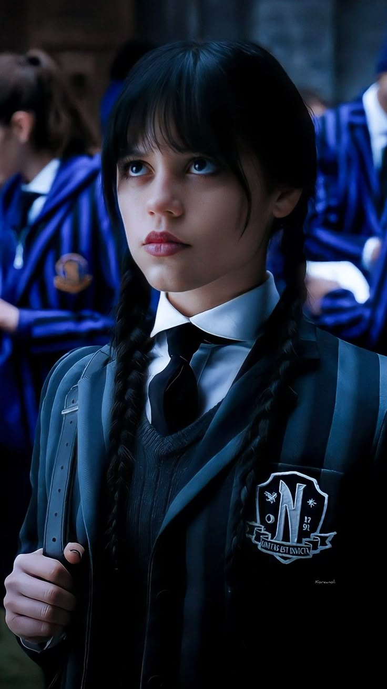

I find people exhausting. Silence, however, is therapeutic.
Smiling doesn’t solve murders.
I dissect mysteries like I dissect frogs — with precision and no remorse.
Light exposes flaws. Darkness reveals truth.
Step into the stillness of Wednesday — a day that rests between chaos and clarity. This gallery captures the mood, the monochrome, and the mystery of midweek thoughts. Some call it ordinary. We call it art in progress.
